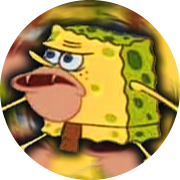

Profile |
Experiences |
Abilities |
Projects |
Contact |
About meSpongeBob is a good-natured, naive, and enthusiastic sea sponge. In The SpongeBob Musical, his exact species of animal is identified: Aplysina fistularis, a yellow tube sponge that is common in open waters. He resides in the undersea city of Bikini Bottom with other anthropomorphic aquatic creatures. He works as a fry cook at a local fast food restaurant, the Krusty Krab, to which he is obsessively attached, showing devotion to it above other restaurants. His boss is Eugene Krabs, a greedy crab who nonetheless treats SpongeBob like a son. Squidward Tentacles, an octopus, and SpongeBob's ill-tempered, snobbish neighbor, works as the restaurant's cashier. SpongeBob's hobbies include fishing for jellyfish, practicing karate with his friend Sandy Cheeks (a squirrel from Texas), and blowing bubbles. SpongeBob is often seen hanging around with his best friend, starfish Patrick Star, one of his neighbors. SpongeBob lives in a submerged pineapple with his pet snail, Gary. His unlimited optimistic cheer often leads him to perceive the outcome of numerous endeavors and the personalities of those around him as happier than they really are. He believes, for instance, that Squidward Tentacles enjoys his company even though he clearly harbors an intense dislike for him (though they have been shown to get along on rare occasions). SpongeBob's greatest goal in life is to obtain his driver's license from Mrs. Puff's boating school, but he often panics and crashes when driving a boat. Website: SpongeBob.com Merch: www.SpongeBobShop.com |
 |
DetailsName: Spongebob Squarepants Location: Bikini Bottom,Phuket,Thailand Social Media: |
|---|
© 2023 Siwawong Jearramanon 1650900218